Twierdzenie (Havel-Hakimi)
(d1,...,dn) - ciąg graficzny
≡(d2′,d3′,...,dn′) - graficzny, gdzie: di={di−1:i=2,...,d1+1di:i=d1+2,..n
Dowód Twierdzenia Havel-Hakimi
⇈
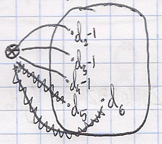
d1=3
rzędy wierzchołków: d2−1
d3−1
d4−1
d5−1…
dołączamy do każdego z powyższych dodatkowy węzeł:
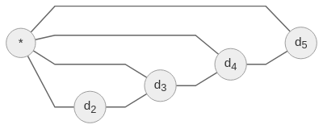
Przykład ⇊

(3,2,2,2,1)
(2,1,1,0)
(3,2,2,2,1)
(1,1,1,1)
- Szukamy grafu o wierszu {1,…,n}
- Wybieramy taki graf G=({1,…,n},E), że ∑{1,x}∈Edeg(x) jest największe.
deg(i)=di
Oznaczenie sąsiedzi wierzchołka
N(x)={y∈V:(∃e∈E)({x,y}∈ϕ(e))}
Claim
{deg(y):y∈N(1)}={d2,d3,...,dd1+1}
Zał. że nie
Jest x∈N(1) takie, że deg(x)<deg(d1+d1)
Przykład
d1=4

v4← lipny, taki, że deg(v4)<d1+d1
Jest y taki, że
- y∈/N(1)
- deg(y)>deg(v4)
Jest z taki, że
- z∈N(y)
- z∈/N(v4)

G′:
- deg(1)=deg6(1)=4
- N(1)={v1,v2,v3,y}
2’. deg6′(y)=deg6(y)
- ∑u∈N(1)deg(u)?∑u∈N(1)degG(u)
Czyli jest graf G na {1,...,n} taki, że:
- jego deg, to (d1,...,dn)
- N(1)={2,3,...,d1+1}
deg(i)=di dla i=2,...,d1+1 ■
Graficzne ZOO
graf zupełny: Kn≅({1,...,n},[{1,...,n}]2)
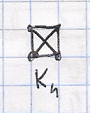
graf pusty: En≅({1,...,n},∅)
graf liniowy: Ln=({1,...,n},{{i,i+1}:i=1,...,n−1})
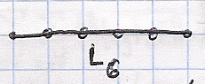
graf cykliczny: CN - jak liniowy, ale połączony w cykl <insert graph>
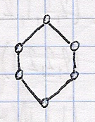
graf (V,E) jest dwudzielny, jeśli istnieją X,Y takie, że:
- X∪Y=V∧X∩Y=∅∧X=∅∧Y=∅
- E⊆{{x,y}:x∈X∧y∈Y}
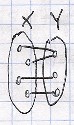
Kn,m=(X∪Y,{{x,y}:x∈X,y∈Y})
∣X∣=n,∣Y∣=m
Operacje (grafy proste)
Mamy G(V,E)
- Dopełnienie: G=(V,[V]2∖E)
przykład: Kn=En
- Usunięcie krawędzi: e∈E: G∖e=(V,E∖{e})
- Usunięcie węzła: x∈V: G−x=(V∖{x},E∩[V∖{x}]2)
Przykład Grafu Petersena
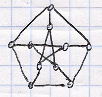
∀x∈V deg(x)=3 jest to graf regularny ≡(∃c)(∀x∈V)(deg(x)=c)
graf kubiczny ≡ 3-regularny
Definicja Graf Krawędziowy
Niech G=(V,E) będzie grafem prostym.
Grafem krawędziowym grafu G nazywamy L(G)=(E,{{L,K}∈[E]2:L∩K=∅})
Przykład
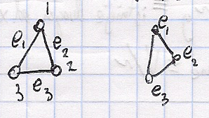
L(K3)IZO≅K3
Konstrukcja:
K5=({0,1,2,3,4},[0...4]2)
Tu mamy (25)=25 ⋅ 4=10 krawędzi.
L(K5)=({0...4}2,{{A,B}∈[[0,4]2]2:A=B∧A∩B=∅})
L(K5)=({{0...4}2:[{0...4}2]2:A=B∧A∩B=∅})
Fakt: L(K5)IZO≅ graf Petersena
Hiper-kostka
Hn=({(i1,...,in):i1,...,in∈{0,1}},{{x,y}:(∃i)(x(i)=y(i)∧(∀j)(x(j)=y(j)))})
Przykład
n=3 (i1,i2,i3)
H2
H3
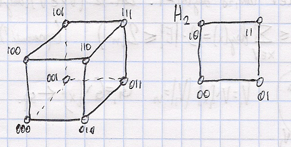
- Suma grafów
G1=(V1,E1), G2=(V2,E2); V1∩V2=∅
G1+G2=(V1∪V2,E1∪E2)
- Złączenie grafów G1 oraz G2:
- G1∗G2=(V1∪V2,E1∪E2∪{{x,y}:x∈V1∧y∈V2})
- Przykład: E3∗E2=K3,2
Definicje - poruszanie się po grafie
Ustalmy graf G=(V,E,ϕ)
- Trasa w grafie G
- ciąg x0e1x1e1...xnen taki że
- x0,...,xn∈V
- e1,...,en∈E
- {xi,xi+1}=ϕ(ei+1) i=0...(n−1)

- Ścieżka: trasa bez powtórzonych krawędzi
- Droga: ścieżka bez powtórzonych wierzchołków
- Cykl: ścieżka taka, że x0=xn
- Cykl elementarny: (x0x1...xn−1xn)=x0 przy czym (x0x1...xn−1xn) to jest droga
Nazewnictwo: | ≡ | ≡ | ≡ | | ——– | ——– | —————– | ————– | | trasa | trail | droga | trasa | | ścieżka | walk | droga prosta | ścieżka | | droga | path | droga elementarna | ścieżka prosta |
Fakt ↺
- Jest trasa od x do y
- Jest droga od x do y
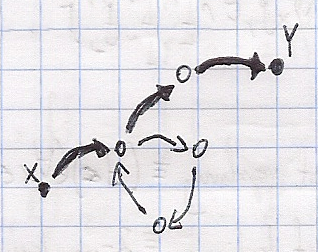
Składowe spójne
Mamy graf G=(V,E,ϕ).
Na V określamy relację:
x∼y⟺ kiedy istnieje droga od x do y
Fakt: ∼ jest to relacja równoważności
Terminologia: składowe spójne ≡V/∼
c(G)=∣V/∼∣
G jest spójny ≡ c(G)=1
Twierdzenie #2
Niech G=(V,E) będzie grafem prostym.
Jeśli G jest spójny to ∣E∣≥∣V∣−1
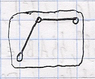
Dowód
n=1 → OK
n=2 → OK
Załóżmy, że dla grafów takich, że ∣V∣=n to jest OK
Niech (V,E) będzie spójny, ∣V∣=n+1 ale ∣E∣<∣V∣−1=(n+1)−1=n, czyli ∣E∣≤n−1
Claim: jest x∈V takie, że deg(x)=1
Załóżmy, że (∀x∈V)(deg(x)≥2)
(n+1)∗2≤x∈V∑deg(x)=2∣E∣≤2(n−1)

V1=V∖{x}, ∣V1∣=n
G1=G∖{x} ← spójny